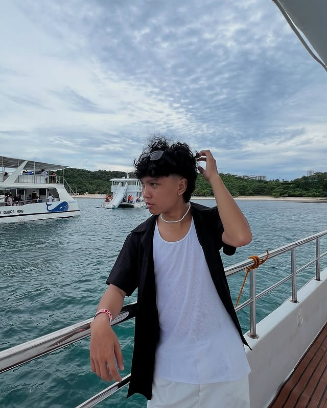
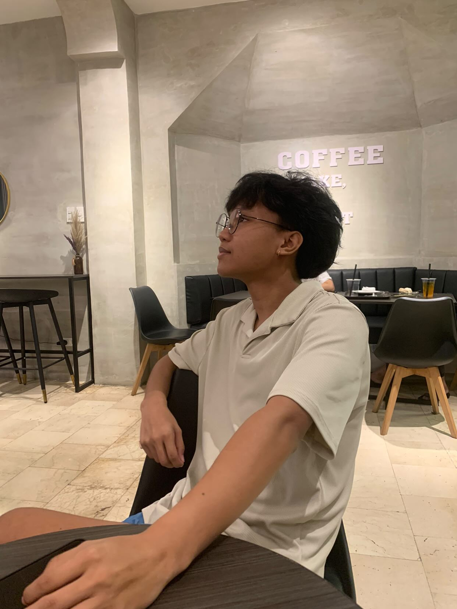
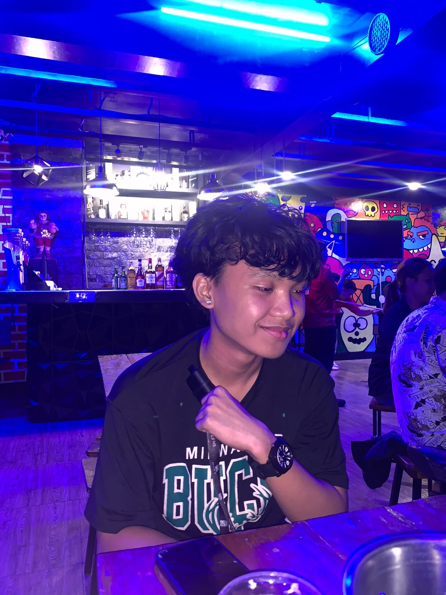
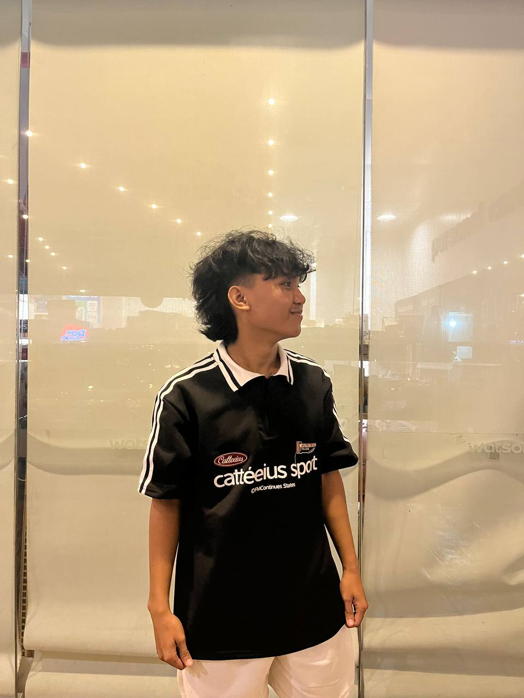
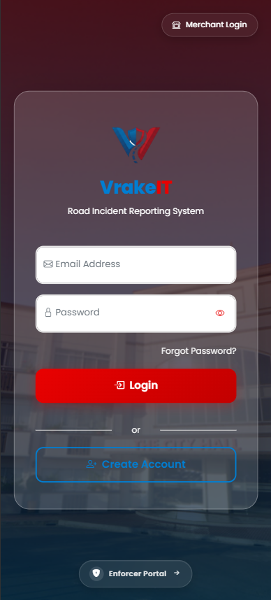
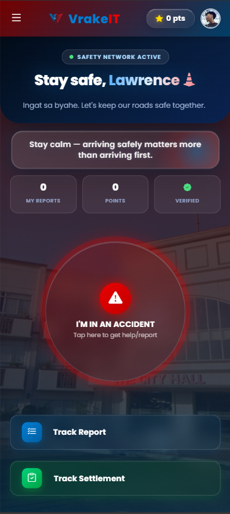
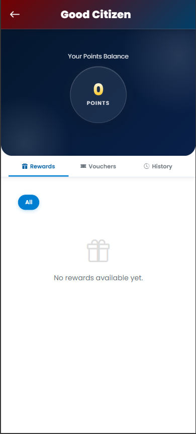
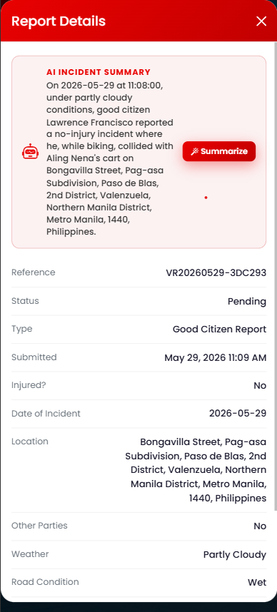
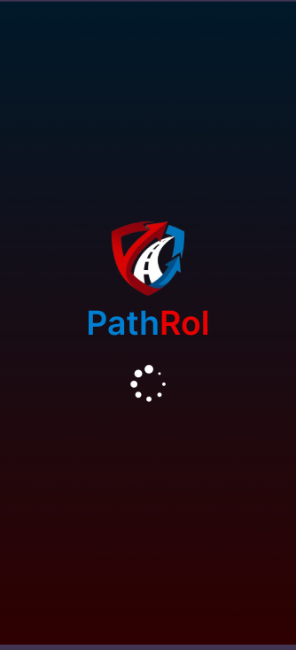
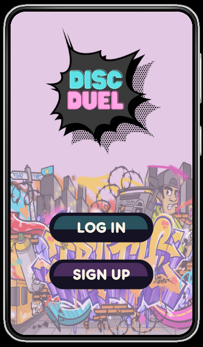

Hello, I'm
IT Student & Aspiring Developer
Crafting clean code, beautiful interfaces, and creative experiences — ready to bring value to your team.

A passionate IT student eager to grow and contribute



Hi! I'm Lawrence Francisco, a dedicated IT student with a strong passion for web development, UI/UX design, and multimedia production. I thrive at the intersection of technology and creativity, always looking for ways to build meaningful digital experiences.
Throughout my academic journey, I've honed my skills in front-end development, prototyping, and visual design. I enjoy collaborating with teams, solving real-world problems through technology, and continuously learning new tools and frameworks that keep me at the forefront of the industry.
I am actively seeking an OJT opportunity where I can apply my knowledge, contribute to meaningful projects, and grow alongside experienced professionals.
Technologies and tools I work with
Semantic markup & web structure
Styling, layouts & animations
Interactive web functionality
Server-side web development
Utility-first CSS framework
UI/UX prototyping & wireframing
User-centered design thinking
Graphic design & visual content
Photo editing & digital art
Storytelling through video
A showcase of my academic and personal projects




VrakeIT is a full-featured web application developed as part of our IT course. It serves as a comprehensive platform integrating user management, an administrative dashboard, and real-time data visualization. The system was built with a focus on usability, clean interface design, and seamless functionality across different user roles including administrators and field enforcers.
The project demonstrates my ability to work with back-end technologies like PHP alongside front-end tools, resulting in a cohesive and functional system ready for real-world deployment.
Pathrol is a UI/UX design project created in Figma, featuring a complete wireframe and interactive prototype. The design focuses on an intuitive navigation experience for a patrol and route management application. Every screen was carefully crafted with user flow in mind — from onboarding to core functionality — ensuring a seamless and accessible interface for end users.
This project highlights my skills in information architecture, interaction design, and high-fidelity prototyping within Figma's collaborative environment.


Disc Duel is a game UI/UX design project developed in Figma as part of a creative academic challenge. The prototype presents a full game interface concept, complete with main menu screens, gameplay HUD layouts, and interactive flow mapping. The design blends dynamic visual elements with clear navigational structure to create an engaging game experience.
This project reflects my versatility in design — moving beyond standard apps to explore the unique challenges of game interface design, including visual hierarchy, feedback systems, and immersive aesthetics.
This demo reel was crafted to showcase our video game "Mataya-Taya" — a thrilling Filipino-inspired action game developed as part of our academic capstone. I was responsible for the complete video editing process, including scene selection, pacing, transitions, sound design, and motion graphics, producing a high-energy promotional reel that captures the essence and excitement of the game.
The project demonstrates my ability to tell compelling visual stories and produce polished, professional-quality video content for creative and commercial purposes.
This video was produced for our Entrepreneurship subject as a group project, where I led the creative direction and video editing process. The film presents our group's business concept through a clear, engaging, and professionally structured narrative — covering the problem statement, proposed solution, target market, and value proposition.
This project showcases my skills in collaborative content creation, visual storytelling, and my ability to translate complex business ideas into compelling video presentations.
This is a demo reel of my very first personal portfolio website, built from scratch as part of my Web Development subject. It marks the beginning of my journey into front-end development — from learning the fundamentals of HTML and CSS to crafting a complete, responsive personal showcase from the ground up.
The project reflects my growth as a web developer and my drive to present myself professionally online. Every design decision and line of code in this first portfolio was a hands-on learning experience that shaped my skills today.
For the Validate website, I was responsible for architecting and implementing the entire backend system. This included server-side logic, database design, user authentication, and data validation — ensuring the platform runs reliably, securely, and efficiently behind the scenes.
This project highlights my backend development capabilities, showcasing my ability to build robust, scalable server-side systems that power functional and secure web applications.
Creative blueprint summary. Download the PDF for complete presentation.
IT Student & Aspiring Developer
[ Web Development / UIUX Design / Backend Dev ]
BSIT student passionate about web development, UI/UX design, and multimedia production. Seeking OJT opportunities to deliver quality digital experiences, clean code, and creative design solutions that make a real impact.
Information Technology
BSIT Campus
● Web Dev // Systems Core
Grab the full, comprehensive copy containing detailed pipeline processes and workflow breakdowns.
Download ResumeOpen for OJT opportunities and collaborations
I'm actively looking for OJT opportunities where I can apply my skills in web development, UI/UX design, and multimedia production. Feel free to reach out — I'd love to discuss how I can contribute to your organization.